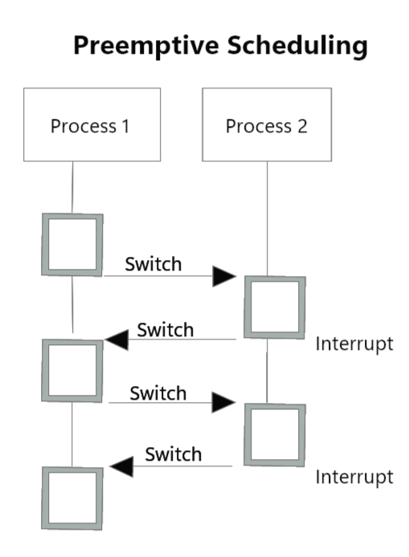

I sistemi preemptive sono sitemi operativi con la capacità di rimuovere i processi dalla CPU, quindi in stato di RUN, con nu atto di PRELAZIONE. In quetso modo i processi più piccoli vengono avvantaggiati portando a dei tempi medi di attesa molto minori rispetto ai sistemi non-preemptive.
